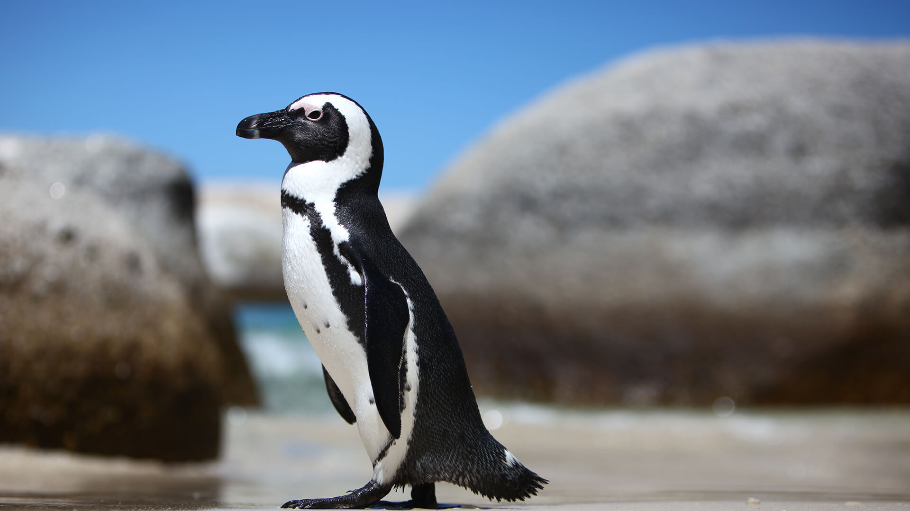
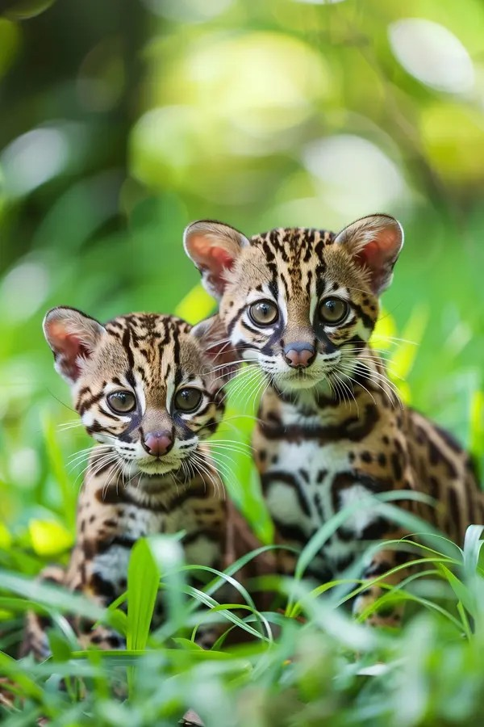
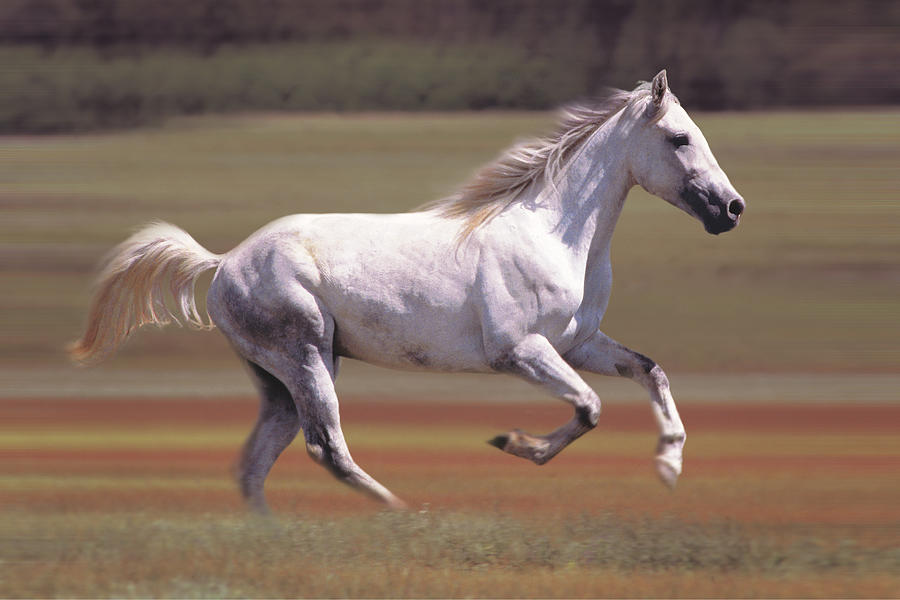

Do you like animals? I love them! One of my absolute favorite animals are penguins. There are 18 different species! I also love ocelots, horses, and wolves. Some of my favorite animals are displayed below.







